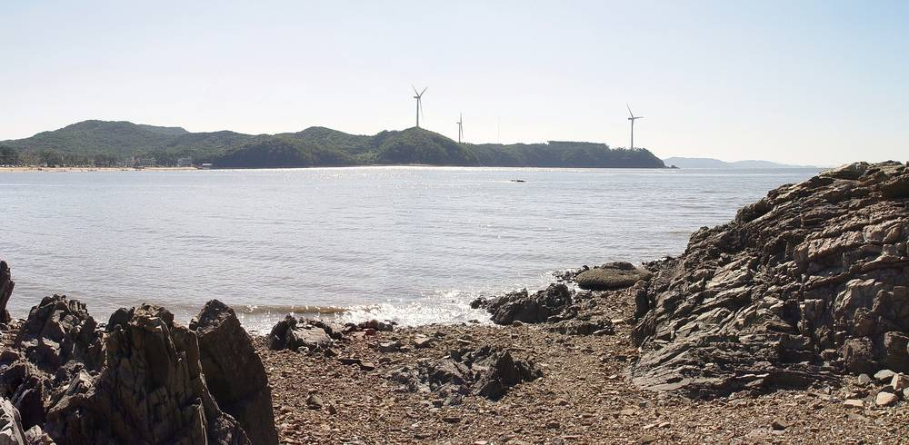

옹진군수 "섬 재생에너지, 계통 연결이 가장 큰 과제"…영흥 내7리 햇빛소득마을 재추진

백령도 7월 정전 2,600가구 최대 8시간…해상풍력 배후항만·송배전망 준비 늦어 "정부·인천시·군 함께 풀어야"
인천 옹진군이 섬의 햇빛과 바람으로 전기를 만들어 주민 소득으로 돌리는 구상을 내놨지만, 생산한 전기를 육지 전력망에 보낼 길이 가장 큰 걸림돌로 꼽혔다. 장정민 옹진군수는 15일 공개된 인터뷰에서 영흥도와 북도면 등 일부를 빼면 외부 전력망에 연결하기 어려운 섬이 많다며, 한국전력과 협의하고 용역을 맡겨 해법을 찾겠다고 밝혔다. 섬의 전력 사정은 여전히 불안해 백령도에서는 올해 7월 31일 약 2,600가구가 최대 8시간가량 정전을 겪었다. 군은 부지 보완 문제로 멈춘 영흥면 내7리 햇빛소득마을 사업을 다시 추진하고, 계통 연결이 어려운 섬은 전기를 섬 안에서 쓰는 자립형으로, 송전이 가능한 섬은 발전 수익 공유형으로 나눠 검토할 계획이다. 장 군수는 인천 앞바다 해상풍력에 대해서도 송배전망·변전시설 준비가 늦고 최소 4만~5만 평 규모의 배후항만이 필요하다며 정부·인천시·군의 공동 대응을 요구했다.
시민에너지 관점
2,600가구가 8시간 동안 전기를 잃은 섬에 필요한 것은 육지에서 끌어오는 전기만이 아니라 섬이 스스로 만들고 저장하는 전기다. 덴마크 삼쇠섬은 주민이 풍력과 태양광을 함께 소유해 에너지 자립과 소득을 동시에 얻었다. 계통이 없어 사업이 어렵다는 걱정에는 마을 단위 저장장치와 자가소비를 묶는 방식이 답이 될 수 있다. 옹진군은 내7리 사업을 첫 사례로 빨리 성사시키고, 섬마다 주민이 지분을 갖는 발전소 계획을 한전과의 협의 테이블에 함께 올려야 한다.
출처: 인천뉴스 2026-11-15 박창우 원문 보기
甕津郡守「島の再エネ、系統接続が最大の課題」…霊興・内7里の「日差し所得村」を再推進
白翎島で7月に2,600世帯が最大8時間停電…洋上風力の背後港湾・送配電網の準備遅れ「国・仁川市・郡で共に解決を」
仁川市甕津郡が島の日差しと風で電気をつくり住民の所得に回す構想を打ち出したが、生産した電気を本土の電力網に送る手段が最大の障害に挙げられた。チャン・ジョンミン甕津郡守は15日に公開されたインタビューで、霊興島や北島面など一部を除けば外部の電力網につなぐのが難しい島が多いとし、韓国電力と協議し、調査委託を通じて解決策を探ると明らかにした。島の電力事情は依然として不安定で、白翎島では今年7月31日に約2,600世帯が最大8時間ほど停電した。郡は用地の補完問題で止まっている霊興面内7里の「日差し所得村（햇빛소득마을）」事業を再び推進し、系統接続が難しい島は電気を島内で使う自立型、送電が可能な島は発電収益共有型に分けて検討する計画だ。チャン郡守は仁川沖の洋上風力についても、送配電網・変電施設の準備が遅れており、少なくとも4万～5万坪規模の背後港湾が必要だとして、国・仁川市・郡の共同対応を求めた。
市民エネルギーの視点
2,600世帯が8時間電気を失った島に必要なのは、本土から引く電気だけでなく、島が自らつくり蓄える電気だ。デンマークのサムソ島では、住民が風力と太陽光を共同で所有し、エネルギー自立と所得を同時に手にした。系統がなく事業が難しいという懸念には、村単位の蓄電設備と自家消費を組み合わせる方式が答えになり得る。甕津郡は内7里の事業を最初の事例として早期に実現させ、島ごとに住民が持ち分を持つ発電所の計画を韓国電力との協議の場に共に載せるべきだ。
出典: 인천뉴스 2026-11-15 박창우 原文を読む
瓮津郡守：“岛屿可再生能源最大难题是并网”…灵兴内7里“阳光收入村”重新推进
白翎岛7月停电2,600户最长约8小时…海上风电配套港口和输配电网准备滞后，“中央、仁川市和郡应共同解决”
仁川瓮津郡提出利用岛屿的阳光和风力发电并把收益转为居民收入的构想，但把电力送往陆地电网的通道被视为最大障碍。瓮津郡守张正民在15日公开的采访中表示，除灵兴岛和北岛面等部分地区外，许多岛屿难以接入外部电网，郡里将与韩国电力公社协商，并通过委托研究寻找解决办法。岛上供电状况依然不稳，今年7月31日白翎岛约2,600户停电，最长约8小时。郡政府将重新推进因用地补充问题而停滞的灵兴面内7里“阳光收入村”项目，并计划分类研究：难以并网的岛屿采用岛内自用的自立模式，可以外送电力的岛屿采用发电收益共享模式。张郡守还就仁川近海海上风电指出，输配电网和变电设施准备滞后，至少需要4万至5万坪的配套港口，要求中央政府、仁川市和郡共同应对。
市民能源视角
对于2,600户停电8小时的岛屿来说，需要的不只是从陆地引来的电，更是岛屿自己生产和储存的电。丹麦萨姆索岛由居民共同拥有风电和太阳能，同时实现了能源自立和收入增长。对于没有电网就难以开展项目的担忧，把村级储能和自发自用结合起来的方式可以成为答案。瓮津郡应尽快把内7里项目办成第一个成功案例，并把各岛居民持股电站的计划一并摆上与韩国电力公社的协商桌。
来源: 인천뉴스 2026-11-15 박창우 查看原文
Ongjin County head says grid connection is the biggest hurdle for island renewables; Sunlight Income Village push at Nae 7-ri resumes
About 2,600 households on Baengnyeong Island lost power for up to eight hours in July; offshore wind port and transmission lagging, county wants joint action with Seoul and Incheon
Ongjin County in Incheon wants to turn island sunlight and wind into income for residents, but getting the power to the mainland grid is the biggest obstacle. In an interview published on the 15th, County Head Jang Jeong-min said that apart from Yeongheung Island, Bukdo-myeon and a few others, many islands are hard to connect to the outside grid, and that the county will negotiate with KEPCO and commission a study to find solutions. Power supply on the islands remains shaky: on July 31 about 2,600 households on Baengnyeong Island lost power for up to about eight hours. The county will revive the Sunlight Income Village project at Nae 7-ri in Yeongheung-myeon, stalled over site issues, and plans to treat islands differently, with self-sufficient local use where grid links are hard and revenue sharing where power can be exported. Jang also said transmission and substation planning for offshore wind off Incheon is lagging and that a support port of at least 40,000 to 50,000 pyeong is needed, calling for joint action by the central government, Incheon and the county.
Citizen Energy View
An island where 2,600 households lost power for eight hours needs more than electricity piped in from the mainland; it needs power it can generate and store itself. On Denmark's Samsø, residents co-own wind and solar and gained both energy independence and income. To the worry that projects cannot work without a grid, village-scale storage combined with local self-consumption can be an answer. Ongjin should make Nae 7-ri a quick first success and put resident-owned plants for each island on the table in its talks with KEPCO.
Source: 인천뉴스 2026-11-15 박창우 Read the original